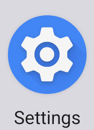
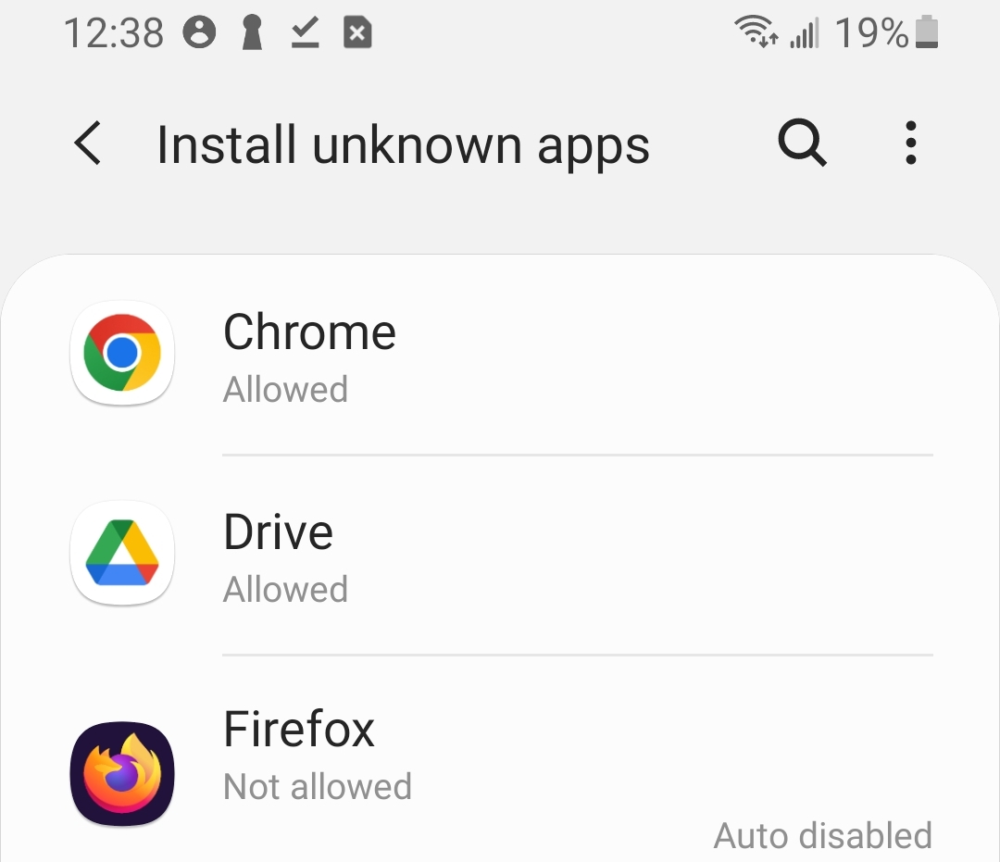
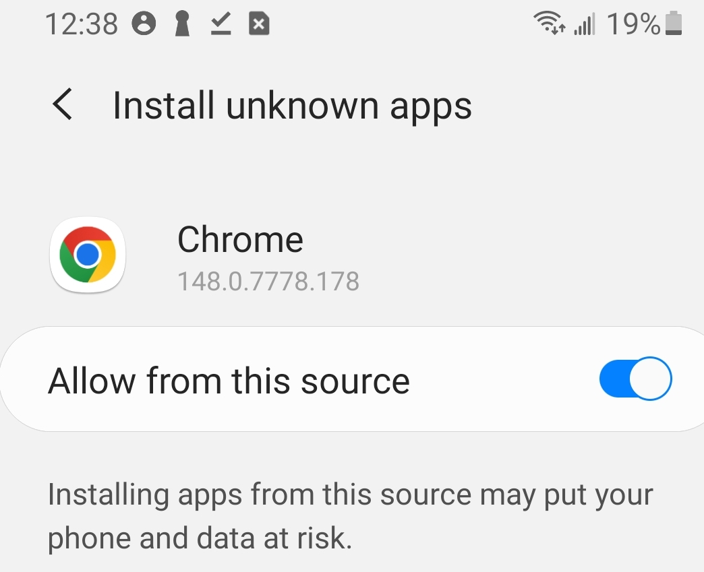
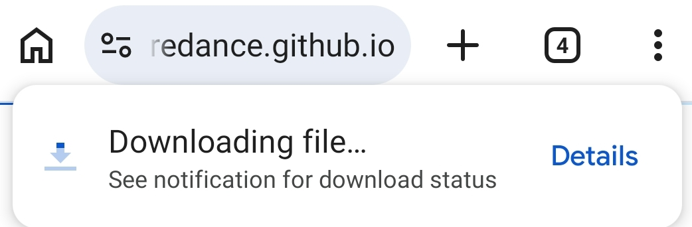
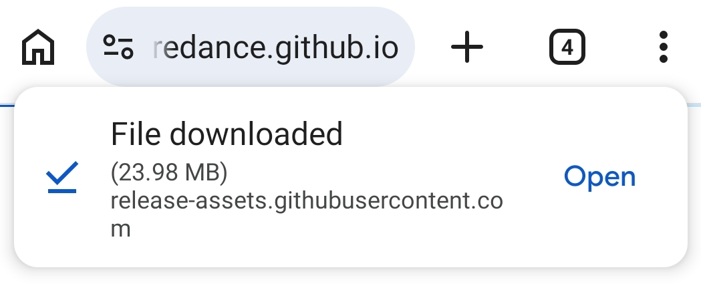
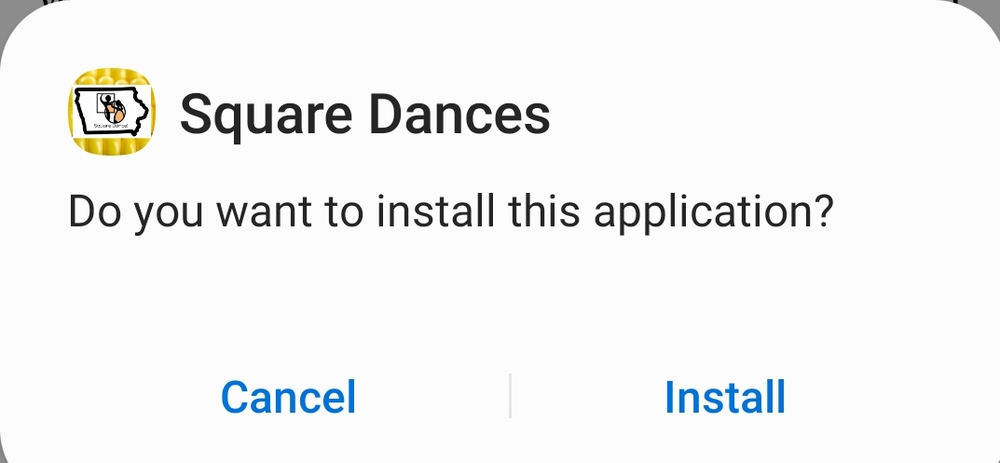
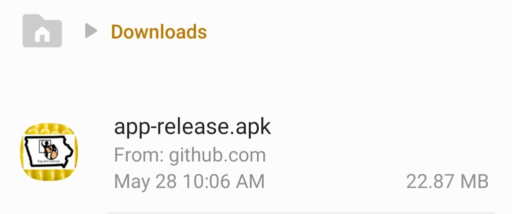
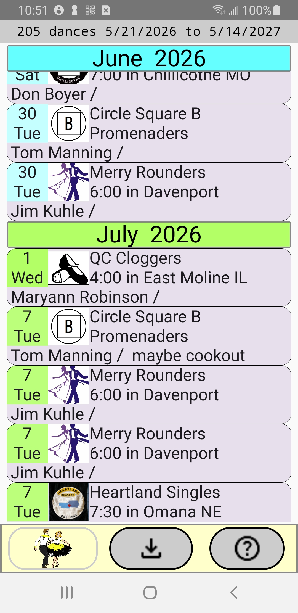
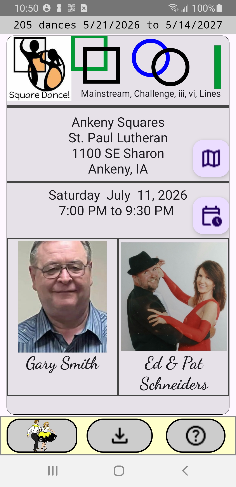

This is how to install the Android phone app containing a list of square dances in and near Iowa.
You may attempt download and installation without reading the instructions below BUT expect a request to permit app installation from "unknown sources".
Depending on your phone, the exact screens you encounter might vary from those shown below.
If you have already authorized installation from unknown sources, skip this section.
The Android operating system is a product of Google. Because we want to avoid installing malicious apps, Android requires your permission to install apps from a source that is not the Google Play Store. Google calls these "unknown sources" and "unknown apps".


The image above shows the selection screen. The Chrome browser is already authorized as an app that can install unknown apps. Your phone might say "Not allowed". The next screen shows how to change it to "Allowed"

The image above shows the screen with the slider switch moved right to enable Chrome as a downloader for unknown apps.
You may exit settings. After installing the schedule app, consider using settings again to disable the installation of unknown apps.
Touch this download button.
Expect one or two messages
The first might quickly disappear if the download is fast.


Touch "open" and expect...

About 30 megabytes will be downloaded for this initial installation.
Touch "Install" and give any other permissions to proceed. Take a moment to find a new app icon on your phone's main screen.
Optional detour for the technically curious:


This scrollable screen shows all Iowa dances known to the app. These include a few clubs in adjacent states.
The app is aware of the current date and changes the background color to a darker grey of dances already held.
Push the download button to update schedule information. A red dot means the app cannot reach the schedule server. Some Android phones will adjust the screen to a landscape data format if you twist the phone.
Touch a dance to see all available details...
